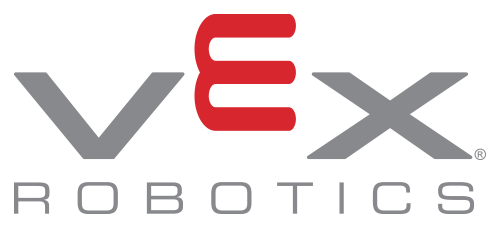

VEX Nedir?
VEX Educational Robotics (Vex EDR ya da VEX V5) olarak da geçen VEX, Robotik Eğitim ve Rekabet Vakfı (REC) tarafından yönetilen bir organizasyondur.

Takımlar yarışmalara VEX tarafından oluşturulan çeşitli kitlerle tasarladıkları robotlarla katılırlar. Takımlar arasında sorun çözmeyi, yaratıcılığı ve liderliği teşvik eden bu organizasyonun; yarışmalara katılan gençler üzerinde dünyayı tam olarak anlamak, STEM eğitimini yeni yöntemlerle birleştirmek, hatalardan ders çıkartarak öğrenmenin önemini aşılamak gibi çeşitli etkileri vardır. VEX aynı zamanda Dünya’da düzenlenen en büyük robotik turnuvasıdır.